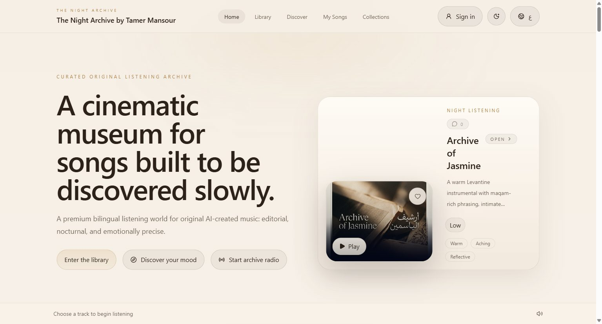
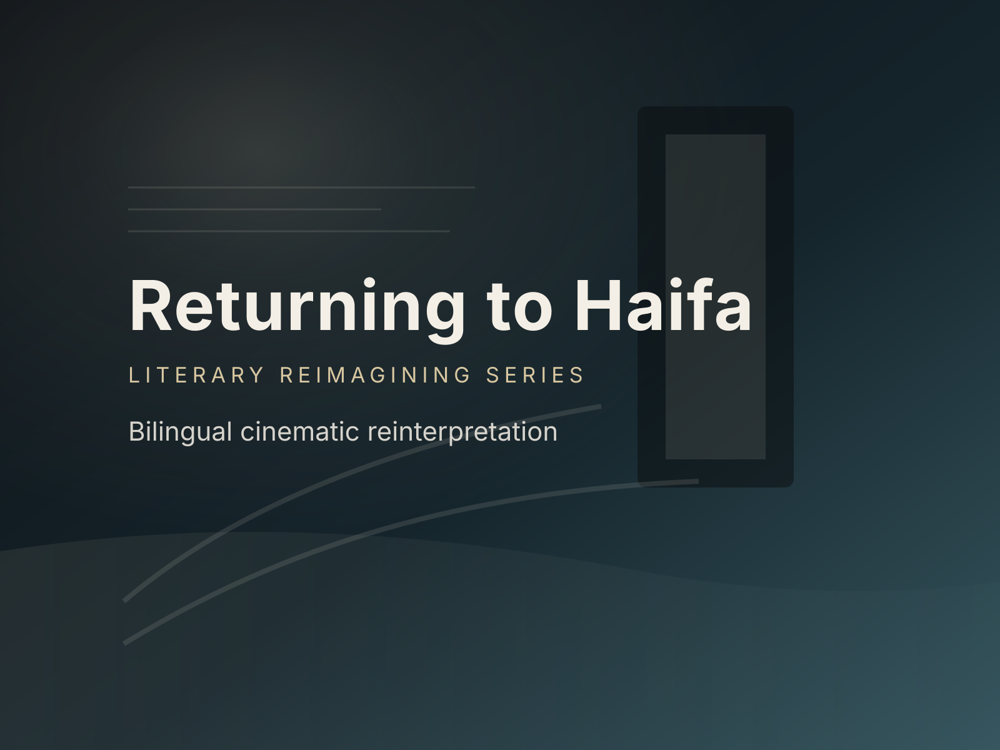
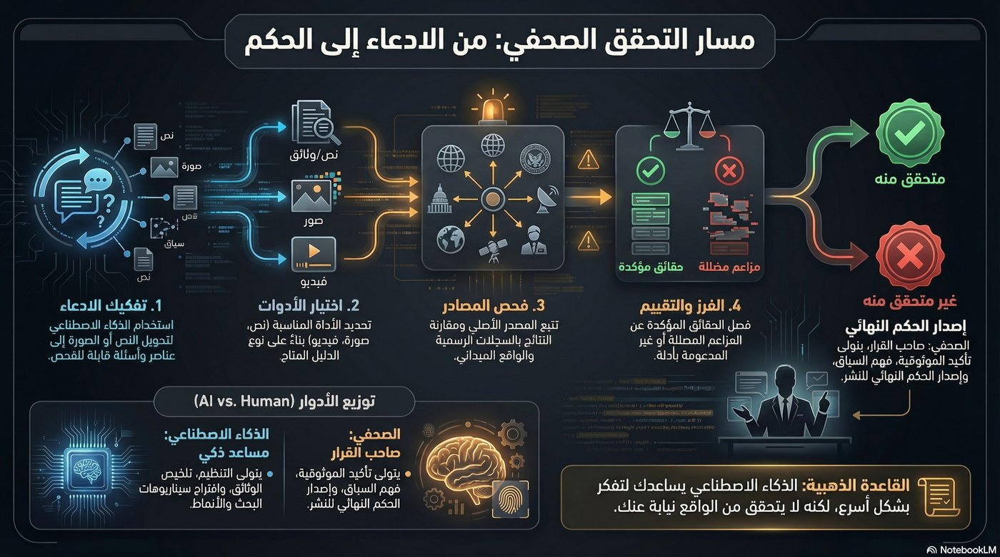

Flagship / Products & Platforms
Museum of Echoes
Original music shaped into a bilingual public archive with editorial discovery, curated rooms, and an authored product experience.
موسيقى أصلية تتحول إلى أرشيف استماع ثنائي اللغة.
Study 01 / Archival Editorial
A warm, document-led direction built from field notes, archival captions, and restrained cultural materiality. Strong for reading and provenance; slightly quieter commercially.

Flagship / Products & Platforms
Original music shaped into a bilingual public archive with editorial discovery, curated rooms, and an authored product experience.
موسيقى أصلية تتحول إلى أرشيف استماع ثنائي اللغة.
Study 02 / Cinematic Publication
A high-contrast, moving-image-first publication. Strongest for film and agency audiences, but risks making workshops and products feel secondary.

Flagship / Stories & Media
Major Palestinian novels interpreted as bilingual cinematic stories without flattening their emotional logic.
تأويل بصري ثنائي اللغة يحفظ الذاكرة والجو والضغط العاطفي.
Study 03 / Contemporary Palestinian Cultural Journal
An authored cultural journal with asymmetric editorial composition, Ramallah margin notes, warm technical detail, and strong commercial chaptering. It carries media, learning, and products with equal confidence.

Flagship / Learning & Workshops
A bilingual learning system that turns responsible AI practice into workflows, source packs, and a live workshop environment.
مختبر ثنائي اللغة يحوّل التحقق من الذكاء الاصطناعي إلى ممارسة قابلة للاستخدام.
Selected direction